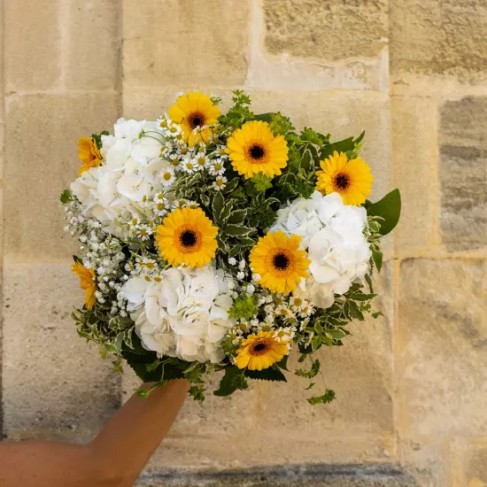
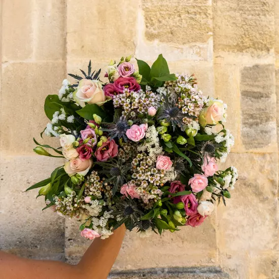
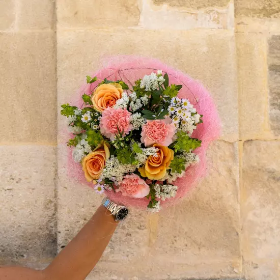
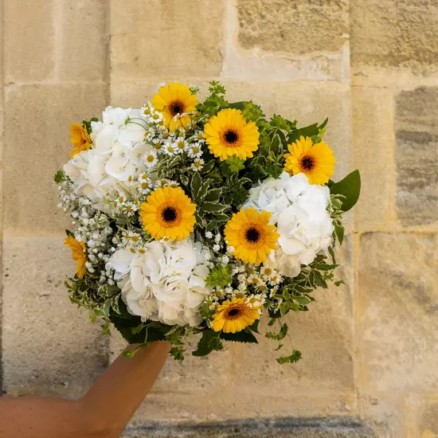
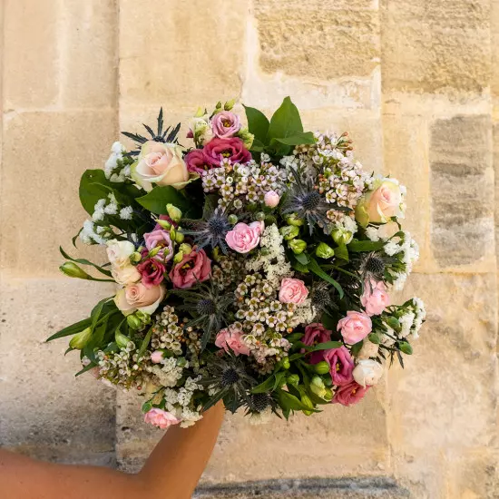
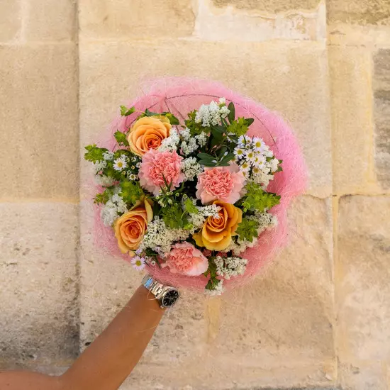
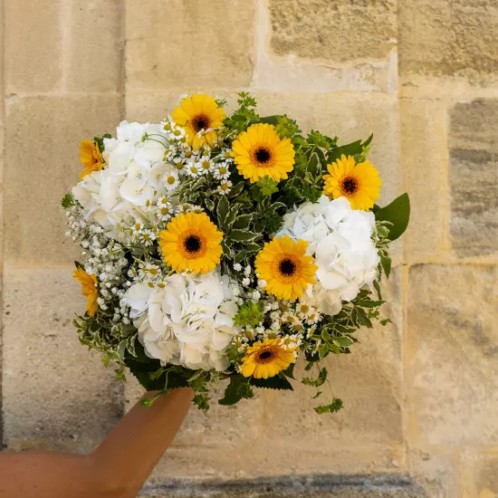
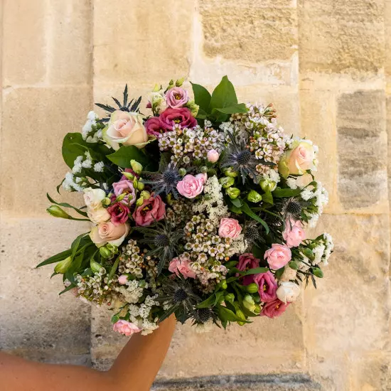
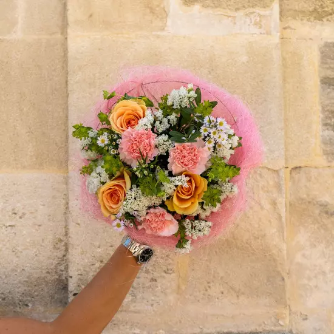
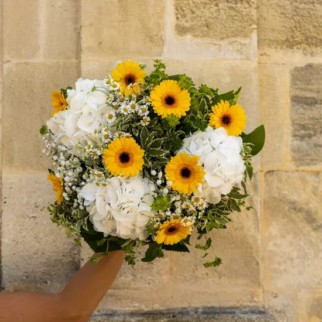
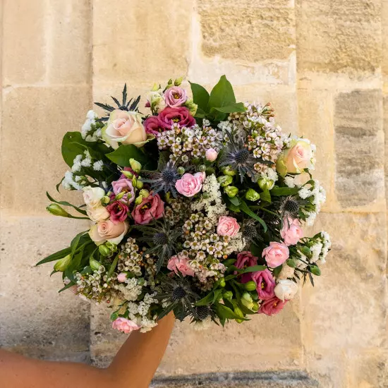
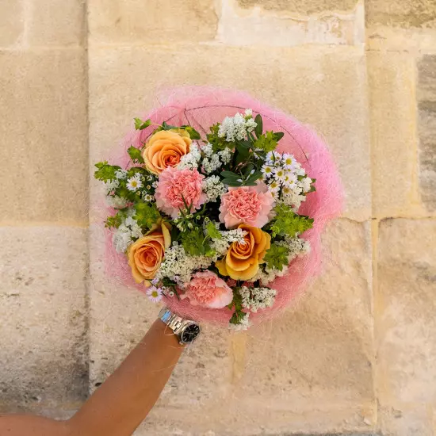
Bloom Petals se démarque grâce à son exceptionnel service de conception de bouquets floraux entièrement personnalisés adaptés à toutes les occasions. Que ce soit pour un mariage élégant, un anniversaire chaleureux, un événement d'entreprise sophistiqué ou toute autre célébration, notre équipe d'artisans floraux talentueux collabore étroitement avec nos clients pour élaborer des arrangements sur mesure, créant ainsi des souvenirs inoubliables en magnifiant la beauté de la nature.
Notre équipe de professionnels est hautement spécialisée dans l'art de la décoration florale d'événements. Nous avons la capacité de métamorphoser les espaces de festivités en véritables paradis grâce à l'utilisation de fleurs fraîches et somptueuses. Que ce soit en créant des centres de table élégants ou en érigeant des arches florales majestueuses, nous concevons des décors floraux qui captivent et enchantent les convives. De plus, notre service complet englobe la livraison, l'installation et la décoration sur place, offrant ainsi une expérience sans stress à nos clients..
Outre nos services de décoration et de conception de bouquets, Bloom Petals propose également des ateliers interactifs de composition florale. Ces ateliers sont spécialement conçus pour les amateurs de fleurs et les passionnés du design floral. Nos experts partagent leur expertise et leurs compétences, guidant les participants dans la réalisation de leurs propres créations florales. C'est une expérience à la fois éducative et divertissante, parfaitement adaptée aux événements d'entreprise ou aux célébrations privées.